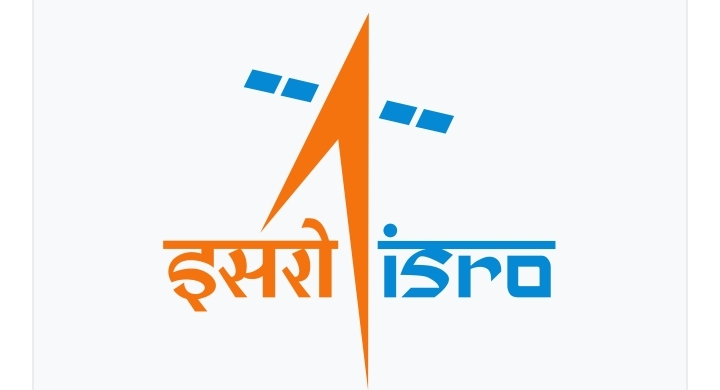
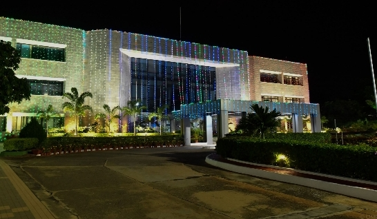

Indian Space Research Organisationis India's national space agency.It operates as the principal research and development arm of the DoS (dipartment of space), which is directly overseen by the Prime Minister of India, with the Chairman of ISRO also serving as the chief executive of the DoS. ISRO has the world's largest constellation of remote-sensing satellites and operates theGAGAN and IRNSS(NavIC) satellite navigation systems. It has sent three missions to the Moon and one to Mars.
 ISRO is one of the six government space agencies in the world that possess full launch capabilities, the ability to deploycryogenic engines, the ability to launch extraterrestrial missions and the ability to operate a large fleet of artificial satellites
.ISRO is also one of only four governmental space agencies in the world to have soft landing capabilities.
| formed | 15th August,1969 |
| type | space agency |
| Jurisdiction | department of space |
| headquarter | bangluru,karnataka |
| primary spaceport: | satish dhavan space centre |
| chairman | shreedhar Somnath |
| owner | government of india |
| employes | 19,247 ( as 2022 ) |
| anual budget | 13,042 crore (1.6 billion us $ ) |
| website | www.isro.gov.in |
ISRO continues to play a leading role in the global space race with ambitious plans for the future, including: